Overview
This documentation explains how end users can execute and manage their cases, as well as the options for users when running a case. In ProcessMaker, a case is an instance of a process. In other words, a process represents the map of work to be done, and a case is a new instance that follows this map. A running case passes through several activities (tasks or sub-processes) in the whole process. For example, in an insurance process for a hospital, each claim of insurance for the treatment of a patient is represented by a single case.
Each case in ProcessMaker has a unique ID - a 32 hexadecimal number to uniquely identify it - and a case number, which counts cases starting from 1.
Note: In order to avoid overwriting issues a new feature is available to forbid opening multiple browser instances of Processmaker. For more information go to: Configuration File env.ini: session_block.
Cases List
The case list is displayed on the left side of the screen. It is composed of a group of folders, which group cases based on their status. These are the cases that the current user has been designated to work on, but has not yet begun.
To access this case list, click on Home in the main top menu.

Cases
New Case
Users who have been assigned to work on a task after a start event can see the list of processes that contain new tasks by clicking on New Case. These are the cases that the current user has been designated to work on, but has not yet begun the work.
To start a case and work on the steps (Dynaforms, Input or Output Documents) of the first task, users must double click on the name of the process (which also includes the name of the initial task)
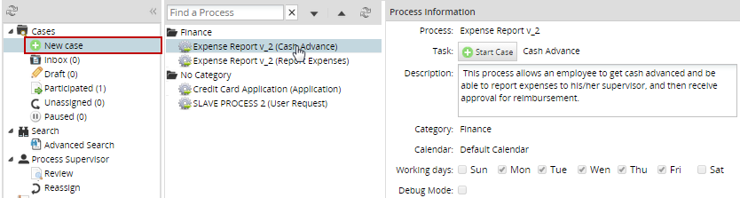
Cases can also be started by selecting the process and clicking on the  button. A window that shows the load progress of the first step is shown to the user.
button. A window that shows the load progress of the first step is shown to the user.

By selecting a process from the list, the Process Information window located on the right side will display its information. The information shown is the following: name of the process, name of the initial task, description, category, the calendar related to the process, its working days, and the status of the debug mode.

Inbox
A case is placed in the user's inbox when the current task in the case has been assigned to their account. Case in the inbox have "To Do" status, meaning that their current task has not been completed yet.
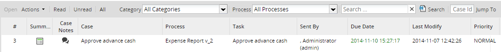
If the case is shown in boldface, then it has not yet been opened and it's considered "unread". Once the case is opened by double clicking on it (or selecting it and clicking on "Open"), then it is considered a "read" case.
Cases whose due date is listed in red have already passed the date when their current task was expected to be completed. The expected time for each task can be set under the Task Timing Control settings.
Cases are initially ordered first by their # (case number), but cases can be sorted in any column by clicking on its header.To switch between ascending and descending order, click on the up or down arrow that appears after clicking on a column header.

Also, it is possible to choose which columns will be shown in the inbox list by clicking on Columns:

By default, the inbox displays all cases, but there are options to filter the cases that have already been opened and the ones that haven't:
- Open: This option opens the case selected. A case must be selected from the list to use this option.
- Actions: This option has a sub-menu as well.

Where:
- Pause: By clicking on the pause icon, a calendar will be displayed where the date when the case will be unpaused has to be set up.

- Summary: Displays the information of the selected case by clicking on this icon
 . Read more about Case Summary.
. Read more about Case Summary. - Case Notes Allows the user to add a note about a selected case by clicking on the following icon
 . Read more about Case Notes.
. Read more about Case Notes. - Reassign: Allows the user to reassign the case to a different user by clicking on the icon. A new window will be displayed with all of the available users:

Click on the user to be reassigned to the case, enter the reason why the case is being reassigned and then click on the Reassign button. Take into consideration that this option is only available if the user has the PM_REASSIGNCASE permission in their role or if the user is a supervisor of the process. Paused cases cannot be reassigned.
- Pause: By clicking on the pause icon, a calendar will be displayed where the date when the case will be unpaused has to be set up.
- Read: Click to list cases that have already been opened (but haven't had their data changed yet).
- Unread: Click to list cases that have not yet been opened.
- All: Click to show all cases.
Draft
A case status changes to "draft" when the assigned user has started to work on the current task, but has not completed it. New cases in their initial task automatically have "Draft" status when they are created.
Note: Only cases in their initial task may have the "Draft" status.
Participated
A participated case is a case in which a user has participated, meaning that the case was assigned to be worked on in at least one of the tasks in the case. When the user clicks on this option, a panel on the right side will show a case list, four options at the top and the search criteria section, like in the image below:

The options are:
- Open: This option displays the information of the case as shown in the image below.

- Started by me: Only the cases started by the current user will be shown in the list.
- Completed by me: Only the cases completed by the current user will be shown in the list.
- All: All participated cases will be shown.
Unassigned
In an unassigned case, the current task has a Self Service assignment rule, meaning that any one of the users assigned to the task can decide to claim the case as their own. Before the case is claimed its status is set to "Unassigned".
The options to filter the unassigned cases are:
- Open: This option displays the information of the case as shown in the image below.

Read: Only cases that have already been opened will be shown by clicking this option.
Warning: The Read filter of the Unassigned list does not work. This is a known issue that will be fixed in upcoming ProcessMaker versions.
Unread: Cases that have not been opened yet will be shown.
Warning: The Unread filter of the Unassigned list does not work. This is a known issue that will be fixed in upcoming ProcessMaker versions.
- All: All unassigned cases will be shown.
Paused
A case can be paused, meaning that it is temporarily unavailable and cannot be opened or worked on. Paused cases can also be unpaused if the user currently assigned to work on the case, or a process supervisor, manually unpauses the case. Note that the cron.php file needs to be executed in order for a case to be automatically unpaused on its unpause date.

Search Criteria
At the top of all the lists (Inbox, Draft, Participated, Unassigned, Pause), there are different filters:

- Category: Searchs by a category created in ProcessMaker. It is worth mentioning that this search will run ONLY with Solr disabled.

- Process: Search all processes created in the workflow using the name of the a process.
- Search: Searchs a specific content in the following columns:
- #
- Case
- Process
- Task

Warning: This filter does not work in customized columns. This is a known issue that will be fixed in upcoming versions of ProcessMaker.
- Jump to: Redirects to a specific case if a case number is entered and the Jump To button is clicked.
Search
Advanced Search
The Advanced Search submenu appears for users who have the PM_ALLCASES permission in their role. It displays all the cases in the workspace and allows users to search for cases according to the following criteria:
- Process: It is possible to search "All Processes" or select a specific process to search.

- Status: It is possible to search all statuses or select a specific status, such as draft, to do and completed.
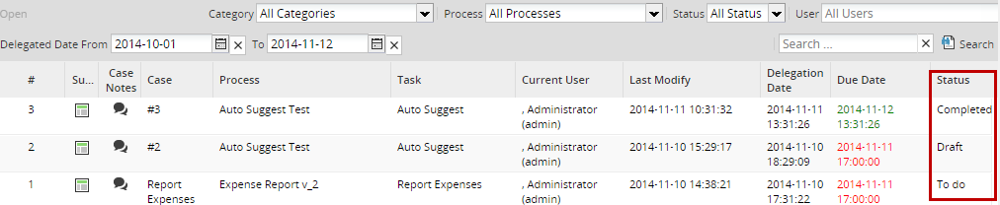
Warning: The statuses displayed in the Status column is the case status NOT the task status.
- User: It is possible to search all users or select a specific user.

This field is a suggest field that has the auto complete option. All coincidences will be shown as text is entered.

The "Current User" option shows all cases belonging to the user currently logged in.

Search by "All Users" displays all unassigned cases:

As you can see in the image above, the [UNASSIGNED] label has been added for cases with the self service assignment rule.
Note: As the image above shows, the search can be done with one or more search criteria at the same time. In the example, the search was filtered by users and status.
- Search: It is possible to enter a specific word into the search box, shown in the image below:
Enter the criteria and click on Search. For example, searching the number of a case would result in the following:

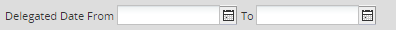
- Delegate Date From: Search for cases that were last routed (delegated) to the current task after this date. Click on
 to select a date.
to select a date. - To: Search for cases that were last routed (delegated) to the current task before this date. Click on to select a date.
After selecting the dates, click on
 to display the result.
to display the result.
Click on the X button next to the Delegate Date From and To fields to clear the date selected in these fields

Process Supervisor
Process Supervisor menu has the following sub-menus:
Note: These sub-menus list the processes where the user logged on has been a Supervisor in the process and is currently Reviewing or Reassigning the case.
Review
Includes cases that have been sent back to the process supervisor. This tab is available only if the user is a process supervisor and their role contains the PM_SUPERVISOR permission. For more information, please visit the Process Supervisor page.
Reassign
This option allows a user to reassign one or more cases to other users and is available in the following cases:
- Users with the PM_REASSIGNCASE permission: If a user has the PM_REASSIGNCASE permission assigned to their role, this menu option will be available to reassign one or more cases of all processes.

Select one or more files at a time by clicking on them and using the SHIFT or CTRL keys.

A dialog with the selected cases will be displayed.

To reassign a case, select the case from the list and double click on the Reassigned to column, and a user list will be displayed where the search option is also available.

Choose a user who will have the authority to work on the case once this is reassigned. Remember that only users assigned to a case or ad hoc users will be listed in the search option when reassigning a case. After that, double click on the Reason column and fill in the reason why the case is being reassigned.

If the Reason column is not filled in, an alert message will be displayed:
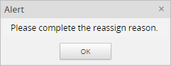
Double click on the Notify column to display a check box. Check the box for each case to notify the assigned users.

Finally, click the Reassign button to finalize the reassignment process. The Status Reassignment window will be displayed, and the case number and the person who was assigned to this case will be shown. Click on the OK button to close this window.

- Supervisor Users: This option is displayed only if a supervisor user has the PM_REASSIGNCASE_SUPERVISOR permission assigned in their role. For more information, please visit the Process Supervisor page.
Documents
The documents panel allows users to arrange the documents in different folders that can be created in this interface, or configure the folder where output documents will be generated. Only users, such as the admin, who have the PM_FOLDERS_VIEW permission in their role will have access to this new option.
Note: It is not necessary to set process permissions to give users access to any type of file managed during the process execution. All files uploaded or generated in a process will be stored in this section.

When the user clicks on the Documents option, they will see the right side panel divided into two panels (observe the following image):

a. Directory: Manages folders and their structure, so a list of created folders using the Documents option or the Destination Path option for output or input documents can be created in this panel. Directories will be created following a tree structure using sub-directories and files.
b. List of Folders and Files: Manages folders and files, so a list of all the input documents uploaded and output documents generated during the process, as well as folders, will be displayed inside this panel.
Note: Due to a data consistency, only a logical delete of the document is performed, which means the document will still be stored in the database. The only modification is in the APP_DOCUMENT table, where the status changes to DELETED when the document is deleted.
Directory
Folders will be displayed on the left side of the panel, and will be created in a tree structure, as shown in the image below:

By right clicking on the folder, a menu with the New Folder, Copy, Move and Delete options for each folder will be displayed:
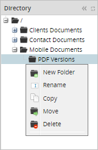
Creating New Folders
Take into account that folders can be manually created in this section, and can be created by running cases where an output or input document was created with a destination file defined. To manually create a folder, right click on the respective folder where the sub folder will be created. For instance, if it's required to create a folder at the root level, right click on folder, click on the New Folder option, and the following box will display:

Where:
- Path: Shows the path where the folder will be created.
- Name: Name of the folder to be created.
Note: As a best practice and in order to prevent future errors, the name of the folder must not use special characters.
The new folder will be created inside the parent folder:

Next to the main folder (Output Documents), the + button will be added automatically when more than one file or folder has been created inside the parent folder. Click on the + button to expand or contract the directory:

Moving Folders
A folder and all of its content can be moved inside another folder. Once the folder is moved from one location to another, it will be removed from the original location.
For example, the following structure includes a file uploaded inside the PDF Documents folder:

Move the PDF Documents folder to the same level as the root folder by right clicking on the PDF Documents folder and selecting the Move option. A destination box will appear where the path of the folder that will be moved must be selected:

A dropdown will show all available paths to move folders. Select / to have the folder moved:
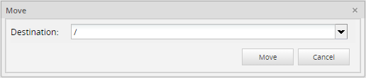
Finally, the folder and its files will be moved. The final structure is shown in the image below:

Copying Folders
A folder, including all its content, can be copied from one location to another, keeping the original file in both locations.
For instance, to copy the PDF Documents folder inside folder 2, right click on the PDF Documents folder and click on Copy. The following box will be displayed:
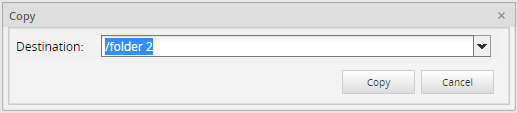
Select the destination and click on the Copy button. The folder and its content will be copied:

Renaming Folder Names
A folder can be renamed by clicking on the name of the folder or by right clicking and selecting the Rename option.
Note: As a best practice and in order to prevent future errors, the name of the folder must not use special characters.
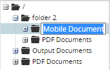
Rename the Documents folder to "Mobile Pictures"; the result will be:

Note: Folders will only be able to have the same name if they are located in different paths.
Deleting Folders
A folder and all of its content (including sub folders) can be deleted. Right click on the folder then click on the Delete option, and a message box will be displayed to confirm if the folder will be deleted.

List of Folders and Files
Folders and files can be managed in the left side panel:

 Root folder: Click on this option to go into the Root Folder.
Root folder: Click on this option to go into the Root Folder.- Reload: Refresh the list of documents.
 New Folder: Creates a new folder under the current directory.
New Folder: Creates a new folder under the current directory.- Delete Folder: Deletes the selected folder.
- Download a file: Downloads a specific file previously chosen from the list. If the file has two versions available (.pdf and .doc), the pdf version will be downloaded.
 Upload a file: Uploads a file.
Upload a file: Uploads a file.- Show Dirs: Shows the directory of directories next to the files inside them. For example, if this option is selected and then the Root Folder icon is clicked, all folders located at that level will be displayed:

After clicking on this button and showing the directories, the button changes its label to Hide Dirs
- Filter current view: Only searches files displayed in the current page view. The search is neither recursive nor by folder names.
Managing Files
This sections displays the list of files manually uploaded or uploaded/generated while running cases in ProcessMaker.

Where:
- Name: Name of the folder/file.
- Version: Version of the document. This is defined if the output or input document has versioning enabled.
- Modified: Date when documents or folders were modified.
- Owner: Owner of the document or folder. The person who ran a case and uploaded or generated the document, or the person who created the folder.
- Type: Type of the document, which can be PDF File, Word Document, External, Power Point File, PNG Picture, JPG, GIF, Input File, Output File.
- Process: Name of the process where the file was uploaded or generated. Folders are not associated with a process, even if they were created while running a case, so no information will be displayed.
- Case: Name and number of the case where a file was uploaded or generated.
Deleting Files
It is possible to delete one or more files at a time. To delete a file, right click on it and select the Delete option. To delete more than one file at the same time select them by using the SHIFT or CTRL keys. Right click on the selection and select the Delete option.
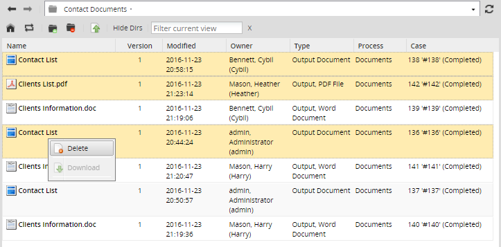
A confirmation box is displayed before deleting the files. Click on Yes to delete the file or click on No to close the box without making any deletion.
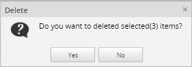
Note: If during the process the same document was generated in both .pdf and .doc formats, and one of them is deleted from the list, then both formats will be deleted because they have the same ID.
Downloading Files
A document in the list can be downloaded to the computer in the following ways:
- Right click on the file to be downloaded and select the option Download
- Next Task: Name of the next task where the case will be routed to.
- Employee: Name of the user who will be in charge of executing the task.
- Preview: Displays the message sent, not only derivation messages and email notifications but also case notes added.
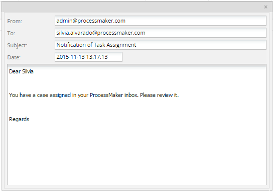
- Resend: Resends the message. Use this option in case the message hasn't been sent or if the message needs to be sent again.
- If a user has permission to see only the cases that they are assigned to, then they will be able to cancel those cases.
- If a user has the PM_ALLCASES permission in addition to the PM_CANCELCASE permission, the user will be able to cancel any case through Advanced Search.
- If a user has the PM_SUPERVISOR permission in addition to PM_CANCELCASE, the user will be able to cancel all the cases that are in the review case list (where the cases of the process where they are supervisor will be displayed).
- The case has a
To Dostatus.Draftcases cannot be canceled. - Cases in the first task cannot be canceled, even if the current user has Process Supervisor permissions. Cases can only be canceled from the second task on.
- Only users who have participated in the case are able to cancel it.
- A case can't be canceled if more than one parallel thread is being executed (e.g. while using parallel gateways, parallel tasks and/or inclusive gateways).
- The last user designated to work on the case and any user who has Process Permissions may still open the canceled case in read-only mode by going to Home > Participated (or Home > Advanced Search if the user's role includes the PM_ALLCASES permission). However, the case data and associated files may no longer be changed.
- If the task is configured to send an automatic notification to the next assigned user, reassigning the case will NOT send out that notification. Likewise, it won't execute any triggers associated with task assignment.
- Reassigning a case will cause the due date for the current task to be recalculated based on the time when the new user was assigned to the case and the new user's calendar.

In the case of Output Documents, if the file was configured to be generated in both .doc and .pdf formats, the Download button won't be enabled and a different icon will be assigned. Double click on the file to display the available versions:

Click one version to start the download process.
Uploading Files
Up to seven files can be uploaded in the folder by clicking on the Upload option on the top menu.

If an existing file is uploaded check the Overwrite option, otherwise it will be uploaded as a different file.
Running Cases
When running a case, there are four options at the top of the menu, like in the menu shown below.

Steps
Shows all the Dynaforms, output and input documents assigned in the current task, allowing each document to be easily accessed.

Assigning Tasks
When all steps in a task have been completed, the case is ready to be routed to the next task. At this point, a window will display the next task's information.

Where:
If for some reason there is no user assigned to the next task, the following message will be displayed:
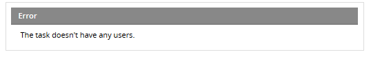
Information
Shows all the information about the current process:

Process Map
By clicking on the Process Map option, a new tab will open next to the current case:

It's very useful for the user to check where in the process the task is on execution. Each task will be differentiated by a color that represents the state of the task. Next to the process, there is a key with the colors explained:

Take into consideration that the process map shows the state of one case at a time. Therefore, in case of start events that work as sub-processes, the process map will show only the state of the tasks belonging to the current case since when a start event is executed a brand new case is created.
For example, when executing a process similar to the image below:
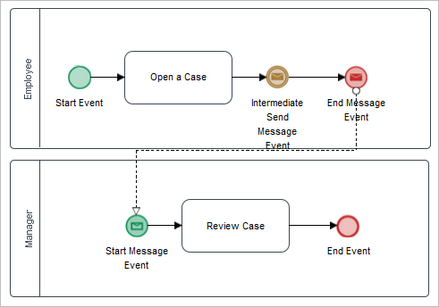
This process creates two cases, each one with their own cycle.
When executing the process, the first case will be created (case #30). After the task is completed, the End Message Event will finish the current case. The process map will show only the state of tasks executed until then (first pool).

As soon as the End Message Event ends the case #30, a new case (case #31) will be created by the Start Receive Message event. The process map of case #31 will show only the state of tasks inside the second pool.

Process Information
By clicking on Process Information, a new window with information about the current process will be displayed:

Task Information
By clicking on Task Information, a new window with information about the current task will be displayed.

Case History
This option allows the user to view all changes made to the form fields assigned to the tasks of the process that have already been completed or are still in progress. Intermediate events are also displayed as a part of case histories. Take into consideration that to be able to see the case history of a process, the user must have view permissions for Dynaforms.
Click on the Case History option to open a new tab with the list of tasks routed or still in progress.

The Enable Action and Disable Action columns saves the date of only paused or canceled cases. If the case action is "Paused," the Enable Action column of that record displays the pause date and the Disable Action column displays the unpause date. If the case action is "Canceled," the Enable Action column of that record displays the cancel date.
Message History
The message history shows all the email notifications sent during the process. Remember that is not possible to restrict users from viewing the case history, which means that all users will be able to see the case history no matter which permissions were set for them.
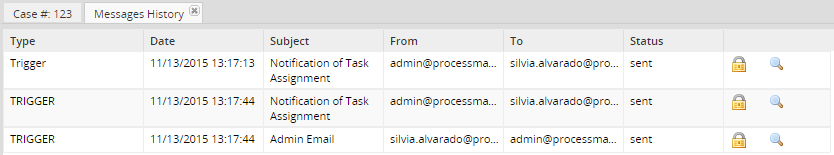
Dynaforms
This option shows all the Dynaforms defined in the process. The user must have process permission to see the list of Dynaforms. The list of Dynaforms will appear during the execution of a case (Inbox, Draft) or at the end of it (Participated).

Preview
By selecting a Dynaform, a preview of the information filled in during the case will be displayed in view mode.
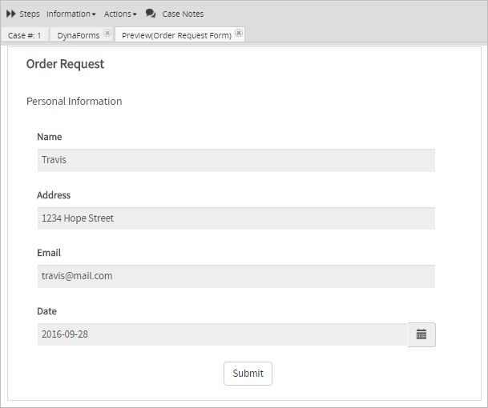
Note: A problem may occur when users that have the Dynaform permission want to download the uploaded documents in the preview of the Dynaform that has more than one file field in it. When downloading the uploaded documents they will find that the same document is downloaded even when the files are different. This happens in Dynaforms that use the same input document several times in different file fields inside the same Dynaform. At the moment, there is no way to determine where each file belongs, so it will always download the last input document by default. The best way to prevent this from happening is to assign different input documents to each file field in a Dynaform.
Change Log
The Change Log section displays the changes of the variable values after each step of each task in the process. This includes all the variables modified and not modified in each step, including before and after triggers.
To allow users to access the change log in a specific task, create a process permission with the type Dynaform and assign the users using the Group or User field. An example of this permission is shown below:
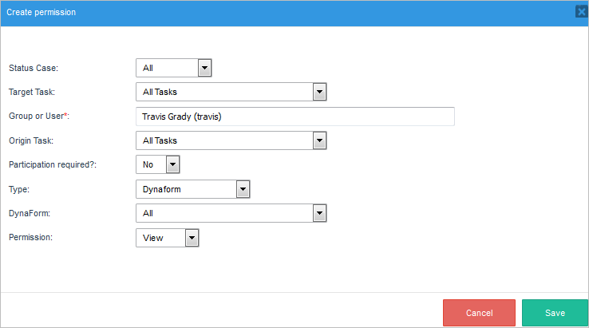
Access the change log by going to Home and opening a case. Then, go to the Information submenu and select the Change Log option.

A new tab will be displayed with the content of the variables, their values and changes through each step, as shown in the image below:

Note: Users who do not participate in the tasks defined in the permission need the PM_ALLCASES permission to search the case through the Advanced Search option and have access to the Change Log option.
Uploaded Documents
This section shows all the allowed documents uploaded by any input document defined during the process:

Users can download the document at any time during the process by clicking on the Download button (also by double clicking on the name of the input document):

Generated Documents
This section shows all the allowed documents generated by any output document defined during the process:

The document can be downloaded in .doc and .pdf by clicking on the corresponding icons. The file can also be downloaded by double clicking on the file name.
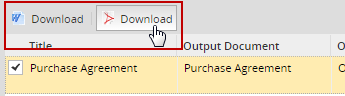
Actions
Shows actions that can be done to the current case after the initial task.
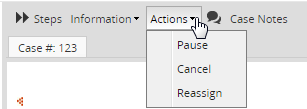
Pause
A selected case from the list can be paused by clicking on the calendar icon. As the image below shows, a calendar will be displayed where the date when the case will be unpaused must be defined

Note 1: Unpausing a case will cause the due date for the current task to be recalculated, starting from the time when the case was unpaused.
Note 2: It is necessary to have the cron configured, since this action depends on the cron execution; if not, the only way to unpause a case is doing it manually.
Delete
If a case is still in its initial task, it can be deleted and its record will be removed from the database. By default, only the user currently designated to work on the case has the rights to delete the case. If other users need to delete the case, then assign them a role with the PM_DELETECASE permission and give them process permission to be able to open the case. They may also need the PM_ALLCASES permission in their role in order to be able to find the case under Home > Advanced Search.
Deleting an Open Case
To delete a case, open the case and select the Delete option from the Actions menu.

A question box will appear to confirm whether the case should be deleted or not.

Click on Yes to delete the case.
Deleting from a List of Cases
Cases can also be deleted by going to HOME > Drafts and selecting the case to be deleted. To select more than one case, hold down the CTRL or SHIFT key while clicking on cases in the list. Then right click on the selected cases and choose Delete from the dropdown menu.

A question box will appear to confirm whether the cases should be deleted or not.

Click on Yes to delete the cases.
Cancel
Once the case has moved onto a subsequent task, it is no longer possible to delete it using the ProcessMaker interface. Instead, the case can only be canceled, meaning that its status will be changed to CANCELED in the database, so it won't be available to be worked on.
The cancel case action is based on the permission PM_CANCELCASE, which allows a user to cancel cases that have been assigned to them - cases where they have participated and can search as a process supervisor under Home > Review. This means:
To cancel a case, open the case and select the Cancel option from the Action menu as seen in the image below:

A new window will open where the reason to cancel the case must be filled.

A quick message will be shown at the bottom right side of the window indicating that the case has been canceled.
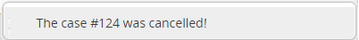
As it was explained before, once the case is canceled, it will be displayed in the Participated list of the user who canceled the case:

A case will only be able to be canceled if it fulfills the following considerations:
Reassign
A selected case from the list can be reassigned, which means that the owner of the case will change. Paused cases cannot be reassigned, therefore this option will be disabled if the case is paused.
If a user other than the admin needs to reassign a case, then it's necessary to assign them a role with the PM_REASSIGNCASE permission included.
To reassign a case, open the case and select the Reassign option from the Action menu and a window will display a list of available users; choose the one who will be the owner of the case, complete the Reason to Reassign this Case field and check the box if you want to notify the users of the case. Finally, click on Reassign:
A confirmation dialog will be displayed:

When the case is reassigned, a message will display at the bottom of the screen.

Take the following into consideration:
Case Notes
Case Notes are used to add comments and observations about cases, and can be read by anyone who possesses the proper permissions.